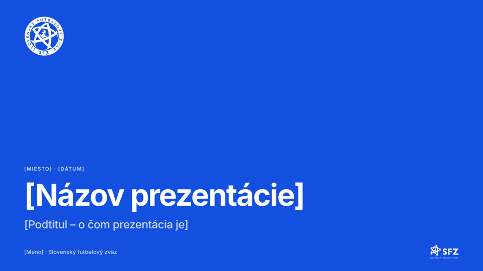
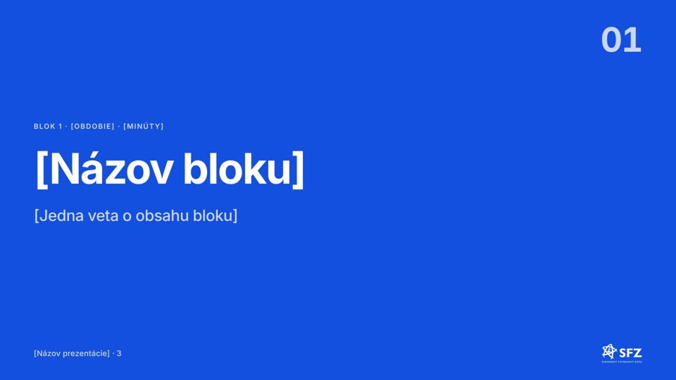
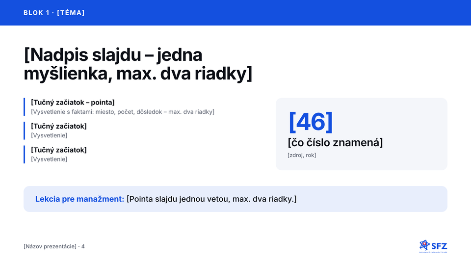
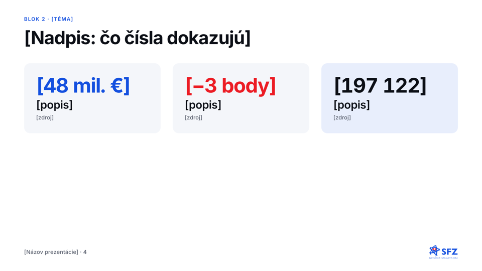
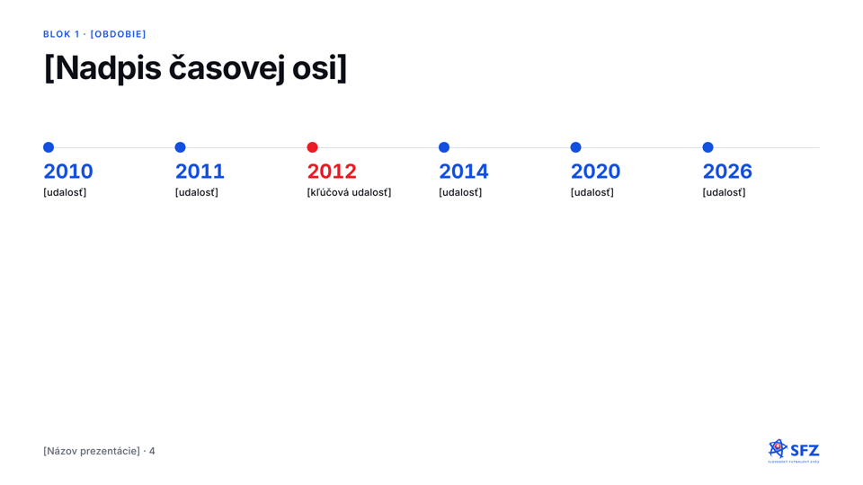
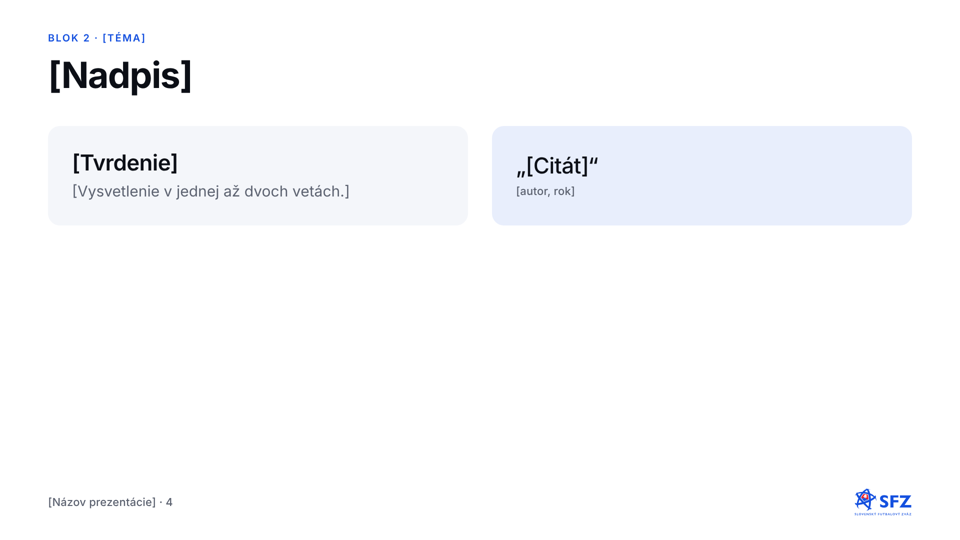
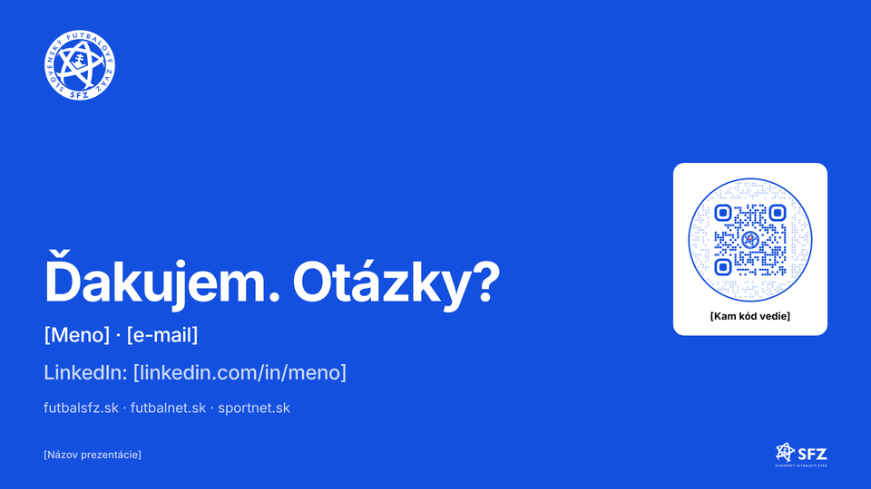
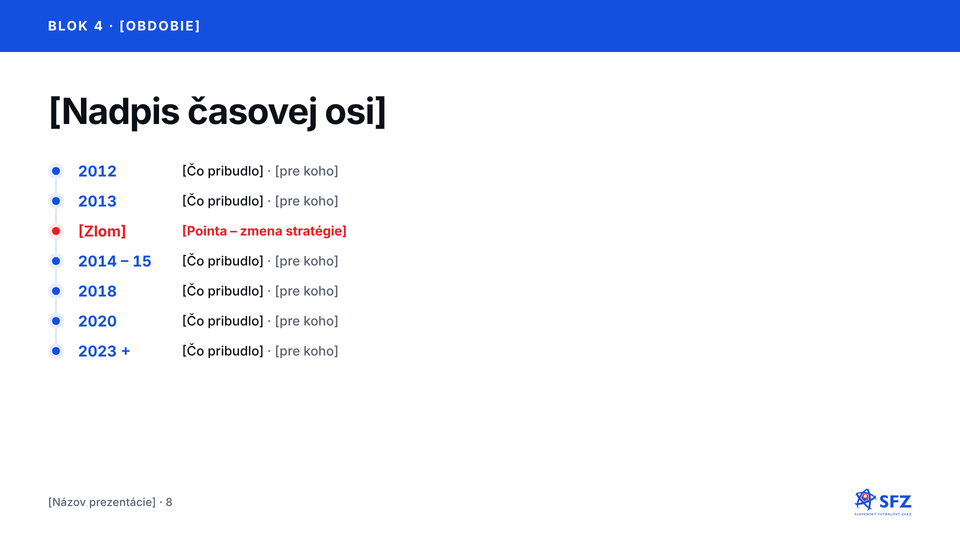
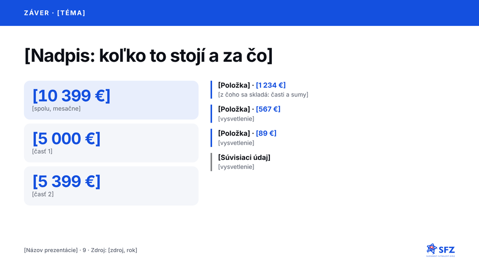

Titulný slajdRaz na začiatok prezentácie.
Predel blokuZačiatok každého bloku.
Obsahový slajdModrý pás, zoznam s linkou (max. 5) a karta s číslom.
Kľúčové číslaMax. 3 dlaždice, jedno číslo červené.
Časová osMax. 6 bodov, pointa červená.
Citát a kartyTvrdenie a citát vedľa seba.
ZáverPoďakovanie, kontakt a QR kód.
Zvislá časová osMax. 10 riadkov, jeden červený zlom.
Čísla s rozpisomTri dlaždice a rozpis v zozname s linkou. QR kód SFZGenerátor s logom v strede, vlastný odkaz.